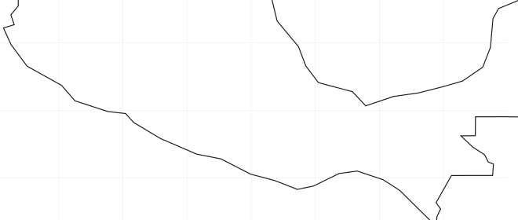

Destilado de agave
BARBECHO — LABRAR LA TIERRA Y DEJARLA DESCANSAR
LOTES
COSECHA 2026
Este agave es la cruza de dos especies nativas de la sierra norte de Guerrero: Angustifolia y Rhodacantha. Que después de muchos años se cruzaron y generaron un hibrido asombroso. Ésta en una bebida única, con un sabor magnificado por las manos de Don Roque usando el método Filipino en un tronco hueco, que es de los métodos más ancestrales de destilación de México,

SIERRA NORTE, GUERREROLas dos especies que dan origen a este lote son nativas de la misma sierra. Cruzarse les tomó muchos años; el resultado no existe en ningún otro lugar del mapa.
Don Roque destila en un tronco hueco, con el método filipino: uno de los métodos más ancestrales de destilación de México. El sabor del lote pasa por sus manos.
Este agave se produce en forma silvestre en las montañas y lomeríos del estado de Guerrero. Tiene un sabor único matizado con notas herbales y un toque dulce. Ha sido destilado por el maestro Jairo de San Miguel de las Palmas Guerrero.
El cupreata no se siembra en hilera: crece donde la montaña lo deja. Se recolecta en las laderas y lomeríos que rodean el pueblo del maestro Jairo.
De San Miguel de las Palmas, Guerrero. Suyo es el lote completo: la recolecta del agave silvestre y la destilación.
El agave lyobaa es considerado uno de los agaves más escasos y difíciles de encontrar en forma silvestre. Lo cultivamos en Palo Grande, en Miahuatlan, Oaxaca y fue destilado por el Maestro Sozimo Jarquin usando el método artesanal de alambique de refrescadera, de alta complejidad y rareza. Disfruta la complejidad, suavidad y perfil aromático de mezcal.
Un agave que casi no se encuentra silvestre, sembrado y esperado en Palo Grande, en la sierra sur de Oaxaca.
Destila con alambique de refrescadera, un método artesanal de alta complejidad y rareza.